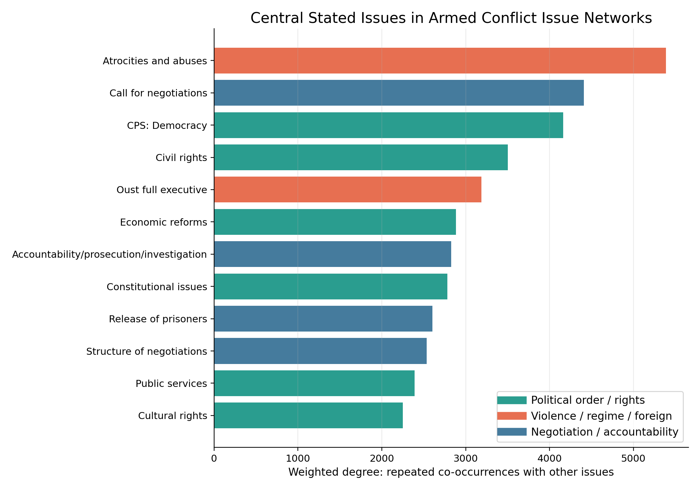
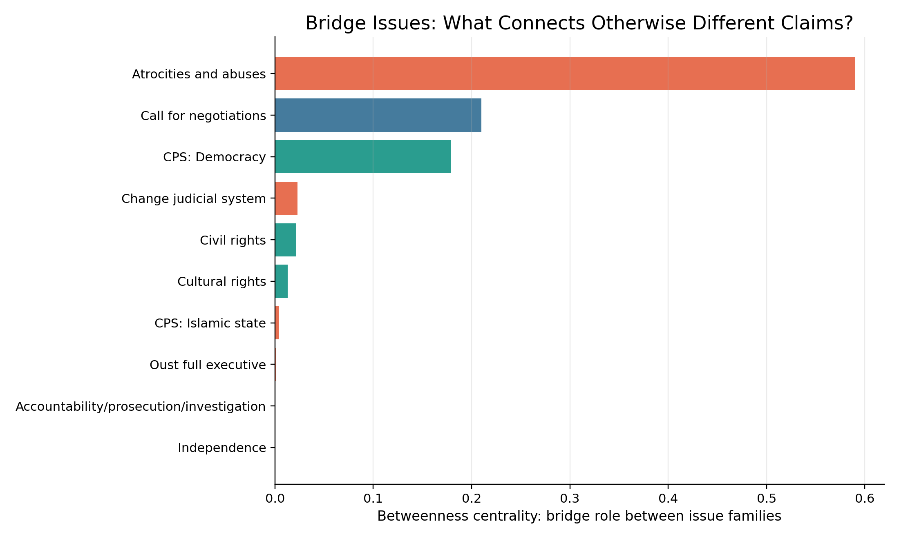
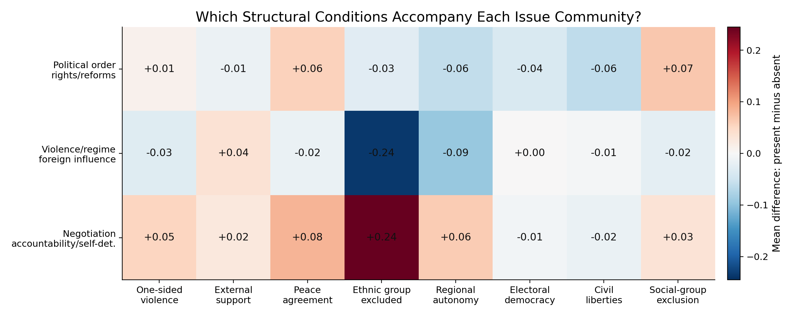
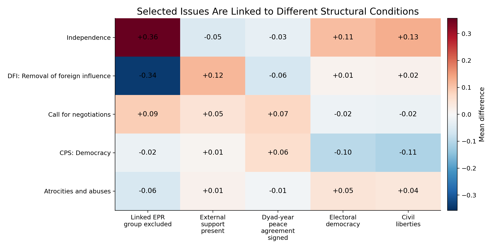
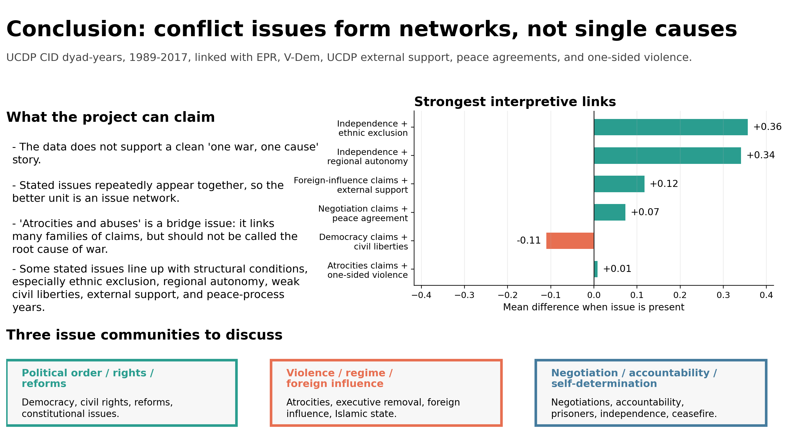

Mapping Stated Conflict Issues and Structural Conditions in Armed Conflicts, 1989–2017
Why do similar conflict claims reappear across different wars?
This project began with a question about contemporary geopolitical tensions. Are modern conflicts truly unique, or do they repeat older patterns of political exclusion, foreign influence, self-determination, and institutional crisis?
Conflict issues do not appear as isolated causes. They form networks.
The UCDP Conflict Issues Dataset does not reveal hidden motives. It records stated issues: the claims, demands, and grievances that conflict actors publicly express.
Therefore, this project does not claim to discover the final cause of each war. It maps the visible structure of conflict claims.
| Initial Idea | Final Focus |
|---|---|
| Find the true causes of war | Map stated conflict issues |
| Cluster wars by root motivation | Analyze issue co-occurrence networks |
| Explain why wars happen | Study how conflict claims are structured |
| Period | 1989–2017 |
| Unit | Active conflict dyad-year |
| Observations | 1,208 |
| Unique dyads | 345 |
| Unique conflicts | 160 |
| Main dataset | UCDP Conflict Issues Dataset |
A dyad is a pair of conflict actors, such as a government and a rebel group. A dyad-year means one conflict actor pair observed in one specific year. If the same conflict continues for five years, it becomes five dyad-year observations.
| Dataset | Role in Project |
|---|---|
| UCDP CID | Main stated issue data |
| UCDP Dyadic | Active conflict dyad-year spine |
| UCDP GED | Event and fatality context |
| EPR | Ethnic exclusion and regional autonomy |
| V-Dem | Democracy, civil liberties, social-group exclusion |
| UCDP External Support | Foreign support context |
| UCDP Peace Agreements | Peace-process context |
| UCDP One-sided Violence | Civilian-targeted violence context |
Each stated issue becomes a node. Two issues are connected when they appear in the same dyad-year. The more often they appear together, the stronger the edge.
| Metric | Meaning |
|---|---|
| Weighted degree | How often an issue appears with other issues |
| Betweenness centrality | How strongly an issue bridges different issue families |
| Community detection | Which issues repeatedly group together |
| Mean difference | How a context variable changes when an issue is present |


| Rank | Central Issue | Interpretation |
|---|---|---|
| 1 | Atrocities and abuses | Main bridge issue |
| 2 | Call for negotiations | Peace-process claim |
| 3 | CPS: Democracy | Political order / reform claim |
| 4 | Civil rights | Rights-based conflict claim |
| 5 | Oust full executive | Regime-change claim |
| Pair of Issues | Count |
|---|---|
| Atrocities and abuses + Call for negotiations | 192 |
| Call for negotiations + Structure of negotiations | 191 |
| Atrocities and abuses + CPS: Democracy | 161 |
| CPS: Democracy + Call for negotiations | 155 |
| Civil rights + CPS: Democracy | 150 |

| Community | Description | Key Issues |
|---|---|---|
| Community 1 | Political order / rights / reforms | Democracy, civil rights, economic reforms, constitutional issues, public services |
| Community 2 | Violence / regime / foreign influence | Atrocities and abuses, executive removal, foreign influence, Islamic state |
| Community 3 | Negotiation / accountability / self-determination | Negotiations, accountability, prisoners, independence, ceasefire |
These communities should not be read as final categories of war causes. They are recurring constellations of stated issues.

| Stated Issue | Linked Context | Difference |
|---|---|---|
| Independence | Ethnic exclusion | +0.357 |
| Independence | Regional autonomy | +0.341 |
| CPS: Democracy | Civil liberties | −0.110 |
| CPS: Democracy | Electoral democracy | −0.096 |
| DFI: Removal of foreign influence | External support | +0.117 |
| Call for negotiations | Peace agreement year | +0.073 |
| Atrocities and abuses | One-sided violence | +0.009 |
These values are descriptive associations. They show how much higher or lower a context variable is when a stated issue appears.

Armed conflicts are better understood not as isolated single causes, but as recurring networks of claims shaped by political and structural conditions.
This project offers a digital humanities map of conflict claims rather than a final explanation of war.